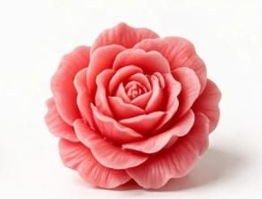
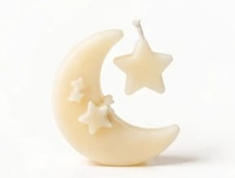
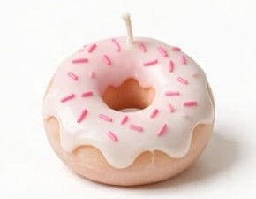
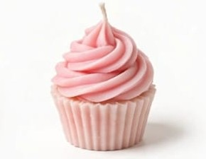
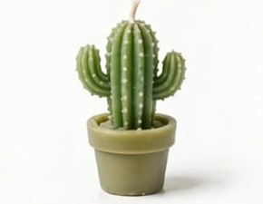
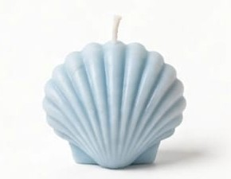
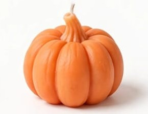
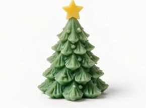
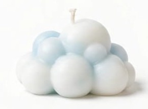
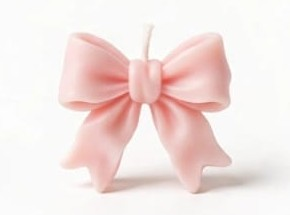

Figuras
Cubo de burbujas
Rosa
Figuras decorativas hechas a mano, ideales para regalar
Rosa

Rojo

Rojo brillante
Café beige

Amarillo

Rosa con glaseado blanco

Rosa con betún rosa

Verde

Azul claro

Naranja

Verde con estrella amarilla

Blanco y azul claro

Rosa
Morado claro
Rosa